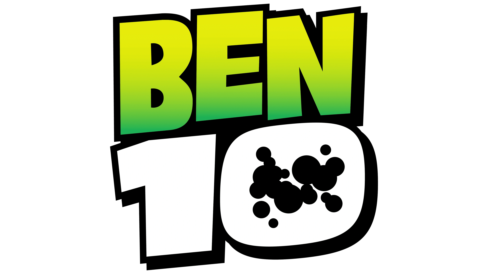
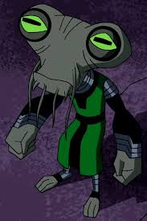

Ben 10 é um famoso desenho onde um garoto de dez anos (Ben Tennyson), durante o acampamento com seu avó (Max) e sua prima (Gwen), até que ele encontra um relógio esquisito que o transforma em muitos aliens diferentes, chamado Omnitrix
Com o Omnitrix, Ben enfrenta diversos inimigos, especialmente para obter o poder do relógio, sendo o principal deles Vilgax

O relógio foi criado por Azmuth, um ser da inteligentíssima espécie Galvariana. Com a finalidade de causar o entendimento e paz entre todos os seres das mais diferentes espécies, pois com este dispositivo seria possível sentir na pele a vida de outro ser.

Ben pode se transformar em diversos alienígenas, sendo os 10 principais (da série clássica):

Pelo sucesso da série, houve a continuação de forma cronológica, seguindo a trajetória de Ben com o Omnitrix. Aqui está a ordem:
O primeiro Ben está disponível na Netflix, enquanto a HBO Max possui todos os citados acima.
Voltar ao começo